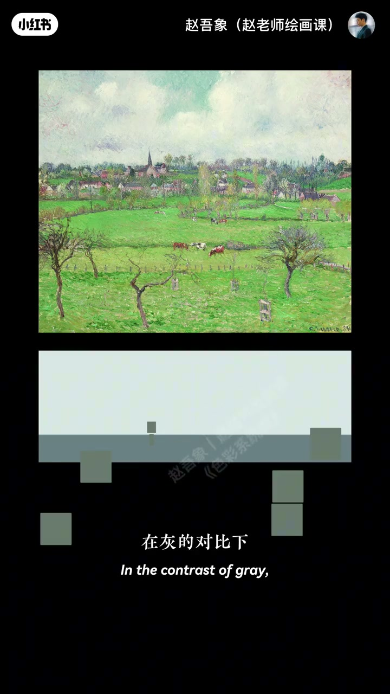
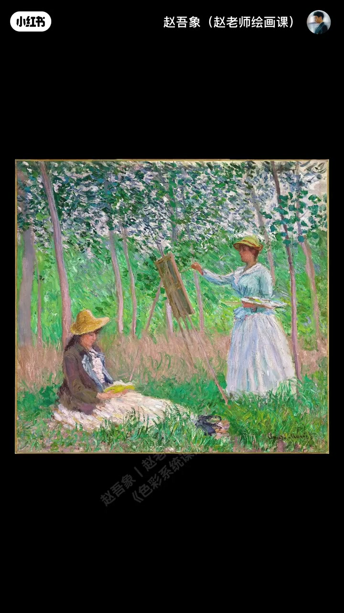
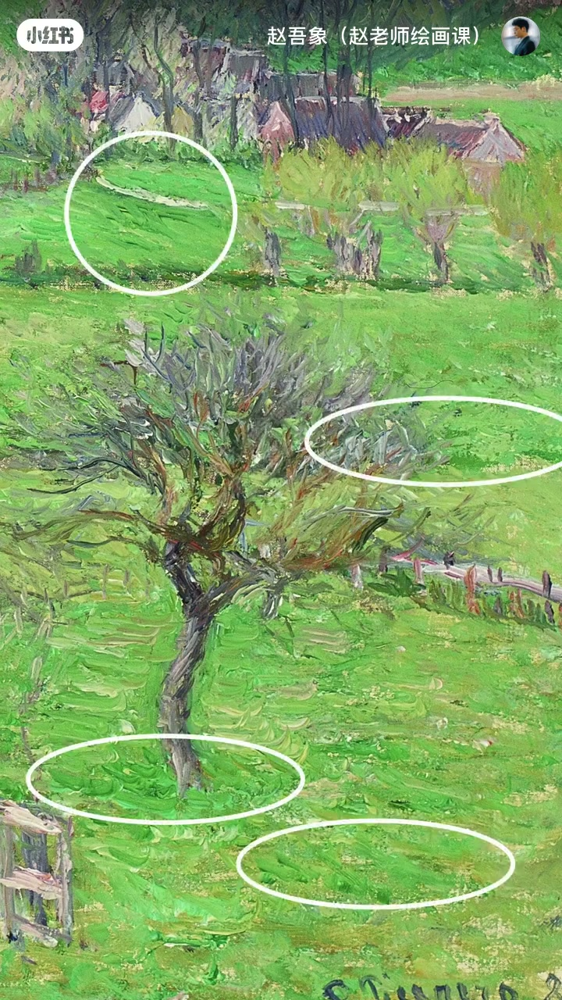
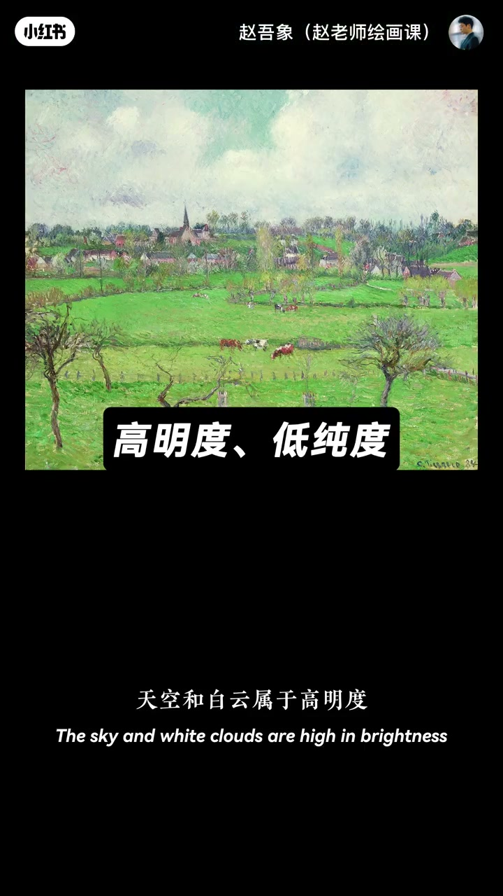

内容要点
一画鲜绿就假，大师绿却鲜艳又自然——好看的鲜绿靠关系制造，不是调出来。毕沙罗巴赞库尔草地看着饱满，实际饱和不高：天云房干极灰衬托，草地才更鲜——以低纯衬高纯；梵高鸢尾、莫奈吉维尼同理。第二，不是平均显眼而是局部显眼：整片中纯加局部闪光笔触，眼睛会以为整片都鲜；均匀显眼立刻过燥。第三，天空白云等高明低纯作视觉缓冲区，呼吸感才出来。
知识结构
灰衬绿；鲜绿靠对比。
中纯底＋闪光点；忌匀亮。
高明低纯区给眼睛喘气。
想要鲜绿：先把周围灰下去，再只在局部加压，并留高明低纯缓冲。
00:00-00:50鲜绿不是调出来的
为何一画鲜绿就假违和，大师绿却鲜艳自然？吾象老师认为真正好看的鲜绿色从来不是调出来的，而是靠色彩关系制造。看毕沙罗巴赞库尔风光：一大片绿地鲜艳饱满，仔细看饱和并不高——他在用灰色衬托绿的鲜艳。
天空云房子树干极灰，灰对比下草地更鲜：以低纯度衬托高纯度。00:48 色块示意「显得更鲜艳」。

00:50-01:48经典同构与局部显眼
梵高瓶中鸢尾：墙面瓶身极灰，桌面花枝绿更显眼；莫奈吉维尼林中：人物衣服地面树干主观降纯，绿树才鲜绿有生机。常犯：不舍得把其他颜色灰下去，对比出不来绿就不显眼好看。
第二：不是平均显眼而是局部显眼。大师面对整片绿保持中纯，局部加显眼笔触，小闪光点让眼睛感觉整片都显眼；均匀显眼马上视觉过燥。01:15／01:45。


01:48-02:27建立视觉缓冲区
最后要建立视觉缓冲区：天空与白云属高明度低纯度，配上眼睛从显眼中得到缓冲，视觉就有呼吸感。这就是高级饱满绿色的正确打开方式。三要点总结：学会了吗？
02:05 缓冲区示意。

完整转录（61段）
以下文本由 Whisper medium 模型自动转录，可能存在少量识别误差，已尽可能修正。
为什么我们一画鲜绿色
画面就很假很违和
而大师笔下的绿
总是能既鲜艳又自然
无相老师觉得
真正好看的鲜绿色
从来不是调出来的
而是靠色彩关系制造出来的
老规矩 我们来看画
这是必杀楼笔下的
巴金库尔的风光
这一大片绿地啊
鲜艳饱满 生机勃勃
你仔细来观察
这片绿其实整体的饱和度并不高
必杀罗其实在用灰色
来衬托绿的鲜艳
天空 云 房子 树干
这些颜色都被处理得极灰
在灰的对比下
草地就会显得更加鲜艳
以低纯度来衬托高纯度
在经典的作品中
这些颜色很常见
在反高的瓶中的院尾花里
墙面和瓶身都极灰
桌面和花枝的绿
就会显得比实际画的更显眼
在莫奈的吉威尼林中作画里
人物衣服 地面 树干
都主观地降低了纯度
绿树才格外显得鲜绿有生机
很多同学常犯的问题啊
就是不舍得把其他的颜色灰下去
纯过对比出不来
绿色就自然不会显眼又好看了
第二 不是平均显眼
而是局部显眼
所有大师都是在用巧劲画画
面对一整片的绿色
他们不会把所有地方都画得显眼
而是整体保持中纯度
局部呢
加入显眼的笔触
这些小小的闪光点
会让你的眼睛感觉
整片草地好像都是显眼的
所以如果均匀的显眼呢
你看 马上就视觉过燥了
最后一个呢
要建立视觉缓冲区
天空和白云
属于高明度低纯度的颜色
这些颜色配上我们的眼睛
从显眼中得到缓冲
视觉就有了呼吸感
这就是高级饱满的绿色
正确的打开方式
这三个要点
我已经帮大家总结好了
你学会了吗